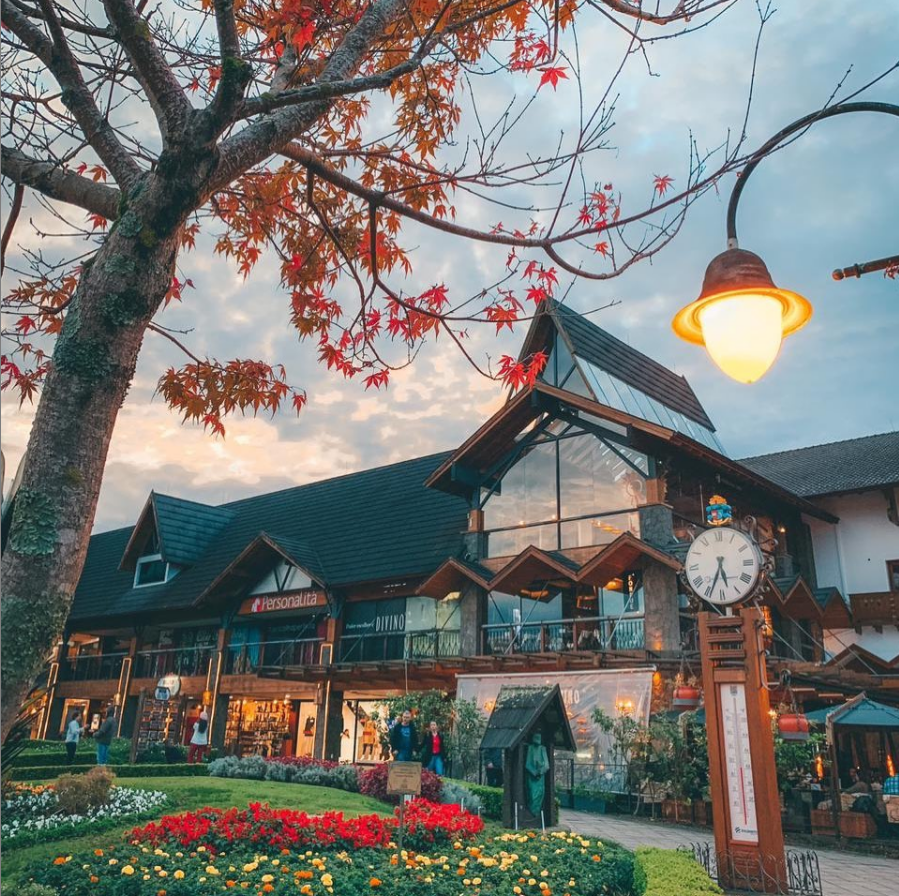

Gramado
Gramado é uma cidade com uma estância de montanha situada no estado mais a sul do Brasil, Rio Grande do Sul. Influenciada pelos colonos alemães do século XIX, a cidade possui um toque bávaro com chalés alpinos, chocolateiros e lojas de artesanato. Gramado é também conhecida pelas suas exibições de luzes de Natal e pelas hortênsias em flor na primavera. O Lago Negro disponibiliza alugueres de barcos e caminhadas na floresta, enquanto as montanhas da Serra Gaúcha possuem trilhos de caminhada e de alpinismo.
Canela

Canela é uma cidade turística na Serra Gaúcha, em Rio Grande do Sul, o estado mais austral do Brasil. Com influências dos colonos alemães do século XIX, a cidade possui chalés de estilo bávaro e chocolateiros. É conhecida pelas exibições de luzes de Natal e pelas coloridas hortênsias em flor na primavera. A Catedral de Pedra, de estilo gótico, com 12 sinos de bronze, fica na frondosa praça principal da cidade, a Praça Matriz.